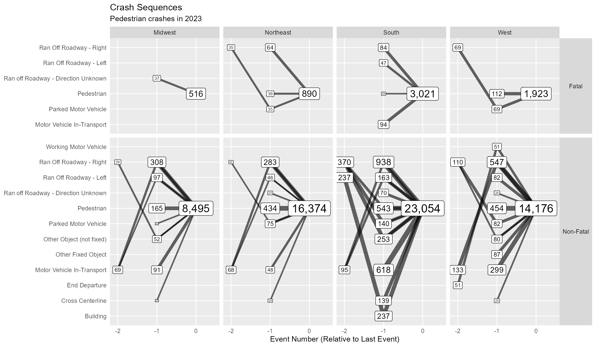

Crash Sequence of Events
Source:vignettes/Crash_sequence_of_events.Rmd
Crash_sequence_of_events.RmdThis vignette explores the vsoe (Vehicle Sequence of Events) data to visualize crash sequence patterns.
vsoe is one of three event-based data files, the
others being cevent and vevent.
According to the CRSS
Analytical User’s Manual, vevent “has the same data
elements as the cevent data file” plus “a data element
that records the sequential event number for each vehicle,” and the
vsoe file “has a subset of the data elements contained
in the Vevent data file (it is a simplified
vevent data file)” (p. 16). rfars
therefore omits cevent and vevent.
First we get one year of data, and filter to the southern region for simplicity.
mydata <- rfars::get_gescrss(years=2021, regions = "s")
#> ✓ 2021 data downloaded
#> Preparing raw data files...
#> ✓ Accident file processed
#> ✓ Vehicle file processed
#> ✓ Person file processed
#> ✓ Weather file(s) processed
#> ✓ Crash risk factors file processed
#> ✓ Vehicle-level files processed
#> ✓ PBtype file processed
#> ✓ SafetyEq file processed
#> ✓ Person-level files processed
#> ✓ Flat file constructed
#> ✓ Multi_acc file constructed
#> ✓ Multi_veh file constructed
#> ✓ Multi_per file constructed
#> ✓ SOE file constructed
#> ✓ Prepared files saved in C:/Users/STEVEJ~1/AppData/Local/Temp/RtmpAz6rnI/GESCRSS data/prepd/2021
#> ✓ Codebook file saved in C:/Users/STEVEJ~1/AppData/Local/Temp/RtmpAz6rnI/GESCRSS data/prepd/
my_events <- mydata$eventsThe Vsoe data is stored in the events
tibble of the object returned by get_gescrss(). Here we see
the top 10 individual events:
my_events %>%
group_by(soe) %>% summarize(n=n()) %>%
arrange(desc(n)) %>%
slice(1:10) %>%
knitr::kable(format = "html")| soe | n |
|---|---|
| Motor Vehicle In-Transport | 47028 |
| Ran Off Roadway - Right | 4014 |
| Ran Off Roadway - Left | 2977 |
| Parked Motor Vehicle | 2044 |
| Rollover/Overturn | 1791 |
| Cross Centerline | 1475 |
| Tree (Standing Only) | 1206 |
| Pedestrian | 1202 |
| Ditch | 932 |
| Utility Pole/Light Support | 770 |
We can also see the top 10 most common sequences:
my_events %>%
select(-aoi) %>%
pivot_wider(names_from = "veventnum", values_from = "soe", values_fill = "x",
names_prefix = "event") %>%
select(starts_with("event")) %>%
group_by_all() %>%
summarize(n=n(), .groups = "drop") %>%
arrange(desc(n)) %>%
slice(1:10) %>%
select(event1, event2, n) %>%
knitr::kable(format = "html")| event1 | event2 | n |
|---|---|---|
| Motor Vehicle In-Transport | x | 38851 |
| Motor Vehicle In-Transport | Motor Vehicle In-Transport | 2248 |
| Parked Motor Vehicle | x | 1027 |
| Pedestrian | x | 913 |
| Pedalcyclist | x | 592 |
| Live Animal | x | 543 |
| Cross Centerline | Motor Vehicle In-Transport | 392 |
| Ran Off Roadway - Right | Parked Motor Vehicle | 269 |
| Motor Vehicle In-Transport | Rollover/Overturn | 221 |
| Motor Vehicle In-Transport Strikes or is Struck by Cargo, Persons or Objects Set-in-Motion from/by Another Motor Vehicle In Transport | x | 187 |
Below we consider all state transitions - the transition from one event to the next in the sequence. For example, the sequence A-B-C-D has three transitions: A to B, B to C, and C to D. The graph below shows a subset of the more common transitions in the crash sequences. It is interpreted as follows: the event listed on the x-axis (top) was followed by the event listed on the y-axis. The percentage shown at the graphical intersection represents the percentage of transitions from one event (x) to another event (y). For example, ‘Fence’ was followed by ‘Tree (Standing Only)’ in 21% of sequences. Note that we have added a state labelled ‘Pre-Crash’ to help account for sequences with just one event. Another notable takeaway is the large number of events that precede Rollover/Overturn.
my_events %>%
group_by(year, casenum, veh_no) %>%
dplyr::rename(event_to = soe) %>%
mutate(event_from = data.table::shift(event_to, fill = "Pre-Crash")) %>%
select(event_from, event_to) %>%
group_by(event_from, event_to) %>% summarize(n=n()) %>%
group_by(event_from) %>% mutate(n_from = sum(n)) %>%
mutate(n_pct = n/n_from) %>%
filter(n_pct>.2, n>5) %>%
mutate(
event_from = ifelse(nchar(event_from)>30, paste0(stringr::str_sub(event_from, 1, 30), "..."), event_from),
#event_to = paste0(stringr::str_sub(event_to, 1, 30), "..."),
event_to = stringr::str_wrap(event_to, 40)
) %>%
filter(event_from != event_to) %>%
ggplot(aes(x=event_from, y=event_to, fill=n_pct, label=scales::percent(n_pct, accuracy = 1))) +
viridis::scale_fill_viridis() +
geom_label() +
scale_x_discrete(position = "top") +
theme(
axis.text.x.top = element_text(angle=45, hjust=0),
axis.ticks = element_blank(),
#axis.text.x.bottom = element_text(angle=270, hjust = 0, vjust=.5),
#legend.position = "none"
)
#> Adding missing grouping variables: `year`, `casenum`, `veh_no`
#> `summarise()` has grouped output by 'event_from'. You can override using the
#> `.groups` argument.